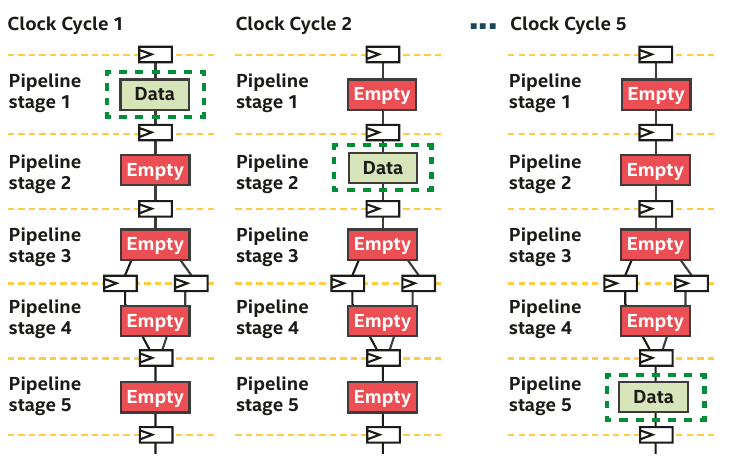
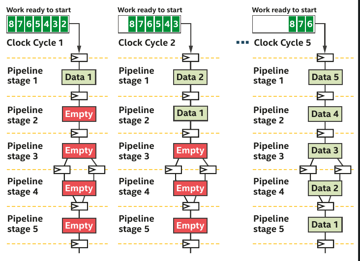
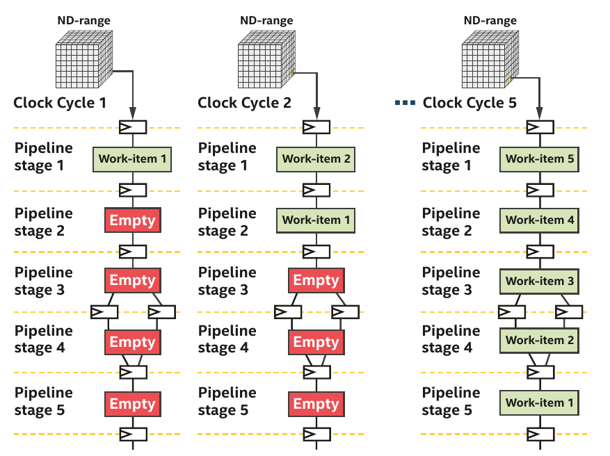

Developing SYCL programs for Intel® FPGA cards¶
Anatomy of a SYCL program¶

Data Management¶
In the context of SYCL, Unified Shared Memory (USM) and buffers represent two different ways to handle memory and data management. They offer different levels of abstraction and ease of use, and the choice between them may depend on the specific needs of an application. Here's a breakdown of the differences:
Unified Shared Memory (USM)¶
Unified Shared Memory is a feature that simplifies memory management by providing a shared memory space across the host and various devices, like CPUs, GPUs, and FPGAs. USM provides three different types of allocations:
- Device Allocations: Allocated memory is accessible only by the device.
- Host Allocations: Allocated memory is accessible by the host and can be accessed by devices. However, the allocated memory is stored on the host global memory.
- Shared Allocations: Allocated memory is accessible by both the host and devices. The allocated memory is present in both global memories and it is synchronized between host and device.
USM allows for more straightforward coding, akin to standard C++ memory management, and may lead to code that is easier to write and maintain.
FPGA support
SYCL USM host allocations are only supported by some BSPs, such as the Intel® FPGA Programmable Acceleration Card (PAC) D5005 (previously known as Intel® FPGA Programmable Acceleration Card (PAC) with Intel® Stratix® 10 SX FPGA). Check with your BSP vendor to see if they support SYCL USM host allocations.
Using SYCL, you can verify if you have access to the different features:
Verify USM capabilities
if (!device.has(sycl::aspect::usm_shared_allocations)) {
# Try to default to host allocation only
if (!device.has(sycl::aspect::usm_host_allocations)) {
# Default to device and explicit data movement
std::array<int,N> host_array;
int *my_array = malloc_device<int>(N, Q);
}else{
# Ok my_array is located on host memory but transferred to device as needed
int* my_array = malloc_host<int>(N, Q);
}
}else{
# Ok my_array is located on both global memories and synchronized automatically
int* shared_array = malloc_shared<int>(N, Q);
}
That's not all
- Concurrent accesses and atomic modificationes are not necessarily available even if you have host and shared capabilities.
- You need to verify
aspect::usm_atomic_shared_allocationsandaspect::usm_atomic_host_allocations.
Bittware 520N-MX
The USM host allocations is not supported by some BSPs. We will therefore use explicit data movement
Explicit USM
- Go to the
GettingStarted/fpga_compile/part4_dpcpp_lambda_buffers/src - Replace the original code with explicit USM code
- Verify your code using emulation
1 2 3 4 5 6 7 8 9 10 11 12 13 14 15 16 17 18 19 20 21 22 23 24 25 26 27 28 29 30 31 32 33 34 35 36 37 38 39 40 41 42 43 44 45 46 47 48 49 50 51 52 53 54 55 56 57 58 59 60 61 62 63 64 65 66 67 68 69 70 71 72 73 74 75 76 77 78 79 80 81 82 83 84 85 86 87 88 89 90 91 92 93 94 95 96 97 98 99 100 101 102 103 | |
Buffer & accessors¶
Buffers and accessors are key abstractions that enable memory management and data access across various types of devices like CPUs, GPUs, DSPs, etc.
-
Buffers:Buffers in SYCL are objects that represent a region of memory accessible by the runtime. They act as containers for data and provide a way to abstract the memory management across host and device memories. This allows for efficient data movement and optimization by the runtime, as it can manage the data movement between host and device memory transparently.
-
Accessors:Accessors provide a way to access the data inside buffers. They define the type of access (read, write, read-write) and can be used within kernels to read from or write to buffers.
Advantage
Through the utilization of these accessors, the SYCL runtime examines the interactions with the buffers and constructs a dependency graph that maps the relationship between host and device functions. This enables the runtime to automatically orchestrate the transfer of data and the sequencing of kernel activities.
Using Buffers and Accessors
What about memory accesses in FPGA ?
For FPGAs, the access pattern, access width, and coalescing of memory accesses can significantly affect performance. You might want to make use of various attributes and pragmas specific to your compiler and FPGA to guide the compiler in optimizing memory accesses.
- The
vector_add.cppsource code introduced in the compiling section relies on buffers and accessors. Although DPC++ is built on top of SYCL, the use of specific hardware needs some attentions
Executing the FPGA bitstream
- Go to
/project/home/p200117/FPGA - We have build to different FPGA bitstream versions of
vector_add.cpp: - Go to the folder
01-no_data_alignment/srcand execute the code on the FPGA card. What do you see ? - Now go to the folder
02-with_data_alignment/srcand execute the code on the FPGA card. How could we align data properly ?
Running on device: p520_hpc_m210h_g3x16 : BittWare Stratix 10 MX OpenCL platform (aclbitt_s10mx_pcie0)
add two vectors of size 256
** WARNING: [aclbitt_s10mx_pcie0] NOT using DMA to transfer 1024 bytes from host to device because of lack of alignment
** host ptr (0xb60b350) and/or dev offset (0x400) is not aligned to 64 bytes
** WARNING: [aclbitt_s10mx_pcie0] NOT using DMA to transfer 1024 bytes from host to device because of lack of alignment
** host ptr (0xb611910) and/or dev offset (0x800) is not aligned to 64 bytes
** WARNING: [aclbitt_s10mx_pcie0] NOT using DMA to transfer 1024 bytes from device to host because of lack of alignment
** host ptr (0xb611d20) and/or dev offset (0xc00) is not aligned to 64 bytes
PASSED
Queue¶
Contrary to OpenCL, queues in SYCL are out-of-order by default. Nonetheless, you can change this behavior you declare it in your code.
In-order-queue
...
queue device_queue{sycl::ext::intel::fpga_selector_v,{property::queue::in_order()}};
// Task A
device_queue.submit([&](handler& h) {
h.single_task<TaskA>([=]() { });
});
// Task B
device_queue.submit([&](handler& h) {
h.single_task<TaskB>([=]() { });
});
// Task C
device_queue.submit([&](handler& h) {
h.single_task<TaskC>([=]() { });
});
...
graph TD
A[TaskA] --> B[TaskB];
B[TaskB] --> C[TaskC];This behavior is not very useful nor flexible. Queue objects, by default, are out-of-order queues, except when they're constructed with the in-order queue property. Because of this, they must include mechanisms to arrange tasks that are sent to them. The way queues organize tasks is by allowing the user to notify the runtime about the dependencies that exist between these tasks. These dependencies can be described in two ways: either explicitly or implicitly, through the use of command groups.
A command group is a specific object that outlines a task and its dependencies. These groups are generally expressed as C++ lambdas and are handed over as arguments to the submit() method within a queue object. The single parameter within this lambda is a reference to a handler object, utilized inside the command group to define actions, generate accessors, and outline dependencies.
Explicit dependencies¶
Like for OpenCL, you can manage dependencies explicitly using events.
Using events
...
queue device_queue{sycl::ext::intel::fpga_selector_v};
// Task A
auto event_A = device_queue.submit([&](handler &h) {
h.single_task<TaskA>([=]() { });
});
event_A.wait();
// Task B
auto event_B = device_queue.submit([&](handler &h) {
h.single_task<TaskB>([=]() { });
});
// Task C
auto event_C = device_queue.submit([&](handler &h) {
h.single_task<TaskC>([=]() { });
});
// Task D
device_queue.submit([&](handler &h) {
h.depends_on({event_B, event_C});
h.parallel_for(N, [=](id<1> i) { /*...*/ });
}).wait();
...
graph TD
A[TaskA] --> B[TaskB];
A[TaskA] --> C[TaskC];
B[TaskB] --> D[TaskD];
C[TaskC] --> D[TaskD];- Explicit dependencies using events is relevant when you use USM since buffers make use of accessors to model data dependencies.
- They are three possibilities to declare a dependcies explicitely:
- Calling the method
wait()on the queue it-self - Calling the method
waiton the event return by the queue after submitting a command - Calling the method
depends_onof the handler object
Implicit dependencies¶
- Implicit dependencies occurs when your are using buffer & accessor.
-
Accessors have different access modes:
-
read_only: The content of the buffer can only be accessed for reading. So the content will only be copied once to the device
- write_only: The content of the buffer can only be accessed for writing. The content of buffer is still copied from host to device before the kernel starts
- read_write: The content of the buffer can be accessed for reading and writing.
You can add the no_init property to an accessor in write_only mode. This tells the runtime that the original data contains in the buffer can be ignored and don't need to be copied from host to device.
Implicit dependencies obey to three main patterns (see DPC++ book):
- Read-after-Write (RAW) : occurs when some data modified by a kernel should be read by another kernel.
- Write-after-Read (WAR) : occurs when some data read by a kernel will be modified by another one
- Write-after-Write (WAW) : occurs when two kernels modified the same data
Implicit dependencies
- By default without access mode, each accessor will be read_write inducing unnecessary copies.
- Note also the first use of
host_accessor. Why did we use it here ? - Modifiy the following code to take into account implicit dependencies.
Parallelism model for FPGA¶
- FPGA strongly differs from ISA-based hardware such as CPU and GPU
Difference between Instruction Set architecture and Spatial architecture
- Made for general-purpose computation: hardware is constantly reused
- Workflow constrained by a set of pre-defined units (Control Units, ALUs, registers)
- Data/Register size are fixed
- Different instruction executed in each clock cycle : temporal execution

- Keep only what it needs -- the hardware can be reconfigured
- Specialize the everything by unrolling the hardware: spatial execution
- Each operation uses a different hardware region
- The design can take more space than the FPGA offers

-
The most obvious source of parallelism for FPGA is pipelining by inserting registers to store each operation output and keep all hardware unit busy.
-
Pipelining parallelism has therefore many stages.
-
If you don't have enough work to fill the pipeline, then the efficiency is very low.
-
The authors of the DPC++ book have illustrated it perfectly in Chapter 17.
Pipelining example provided chap.17 (DPC++ book)

- The pipeline is mostly empty.
- Hardware units are not busy and the efficiency is thus low.

- More data than stages, the pipeline is full and all hardware units are busy.
Vectorization
Vectorization is not the main source of parallelism but help designing efficient pipeline. Since hardware can be reconfigured at will. The offline compiler can design N-bits Adders, multipliers which simplify greatly vectorization. In fact, the offline compiler vectorizes your design automatically if possible.
Pipelining with ND-range kernels¶
- ND-range kernels are based on a hierachical grouping of work-items
- A work-item represents a single unit of work
- Independent simple units of work don't communicate or share data very often
- Useful when porting a GPU kernel to FPGA

- FPGAs are different from GPU (lots of thread started at the same time)
- Impossible to replicate a hardware for a million of work-items
- Work-items are injected into the pipeline
- A deep pipeline means lots of work-items executing different tasks in parallel

- In order to write basic data-parallel kernel, you will need to use the
parallel_formethod. Below is an example of simple data-parallel kernel. As you can notice it, there is no notion of groups nor sub-groups.
Matrix addition
Vector addition
- Go to the
GettingStarted/fpga_compile/part4_dpcpp_lambda_buffers/src - Adapt the
vector_add.cppsingle-task kernel to a basis data-parallel kernel - Emulate to verify your design
- If you want to have a fine-grained control of your data-parallel kernel, ND-range data-parallel kernels are the equivalent of ND-range kernels in OpenCL.
ND-range kernel in SYCL
nd_range(range<dimensions> globalSize, range<dimensions> localSize);- ND-range kernels are defined with two range objects
- global representing the total size of work-items
- local representing the size of work-groups
Tiled Matrix Multiplication
- Fill the blank and complete the code
1 2 3 4 5 6 7 8 9 10 11 12 13 14 15 16 17 18 19 20 21 22 23 24 25 26 27 28 29 30 31 32 33 34 35 36 37 38 39 40 41 42 43 44 45 46 47 48 49 50 51 52 53 54 55 56 57 58 59 60 61 62 63 64 65 66 67 68 69 70 71 72 73 74 75 76 77 78 79 80 81 82 83 84 85 86 87 88 89 90 91 92 93 94 95 96 97 98 99 100 101 102 103 104 105 106 107 108 109 110 111 112 113 114 115 116 117 118 119 120 121 122 123 124 125 126 127 128 129 130 131 132 133 134 135 136 137 138 139 140 141 142 143 144 145 146 147 148 149 150 151 152 153 154 155 156 157 158 159 160 161
#include <iostream> #include <algorithm> #include <random> // oneAPI headers #include <sycl/ext/intel/fpga_extensions.hpp> #include <sycl/sycl.hpp> #include <boost/align/aligned_allocator.hpp> // Forward declare the kernel name in the global scope. This is an FPGA best // practice that reduces name mangling in the optimization reports. class MatMultKernel; int main() { bool passed = true; try { // Use compile-time macros to select either: // - the FPGA emulator device (CPU emulation of the FPGA) // - the FPGA device (a real FPGA) // - the simulator device #if FPGA_SIMULATOR auto selector = sycl::ext::intel::fpga_simulator_selector_v; #elif FPGA_HARDWARE auto selector = sycl::ext::intel::fpga_selector_v; #else // #if FPGA_EMULATOR auto selector = sycl::ext::intel::fpga_emulator_selector_v; #endif // create the device queue sycl::queue q(selector); // make sure the device supports USM host allocations auto device = q.get_device(); std::cout << "Running on device: " << device.get_info<sycl::info::device::name>().c_str() << std::endl; // initialize input and output memory on the host constexpr size_t N = 512; constexpr size_t B = 16; std::vector<float,boost::alignment::aligned_allocator<float,64>> mat_a(N * N); std::vector<float,boost::alignment::aligned_allocator<float,64>> mat_b(N * N); std::vector<float,boost::alignment::aligned_allocator<float,64>> mat_c(N * N); std::random_device rd; std::mt19937 mt(rd()); std::uniform_real_distribution<float> dist(0.0, 1.0); // Generate random values std::generate(mat_a.begin(), mat_a.end(), [&dist, &mt]() { return dist(mt); }); // Generate random values std::generate(mat_b.begin(), mat_b.end(), [&dist, &mt]() { return dist(mt); }); // fill with zero std::fill(mat_c.begin(), mat_c.end(), 0.0); std::cout << "Matrix multiplication A X B = C " <<std::endl; { // copy the input arrays to buffers to share with kernel // We can access the buffer using mat[i][j] sycl::buffer<float,2> buffer_a{mat_a.data(), sycl::range<2>(N,N)}; sycl::buffer<float,2> buffer_b{mat_b.data(), sycl::range<2>(N,N)}; sycl::buffer<float,2> buffer_c{mat_c.data(), sycl::range<2>(N,N)}; /* DEFINE HERE the global size and local size ranges*/ q.submit([&](sycl::handler &h) { // use accessors to interact with buffers from device code sycl::accessor accessor_a{buffer_a, h, sycl::read_only}; sycl::accessor accessor_b{buffer_b, h, sycl::read_only}; sycl::accessor accessor_c{buffer_c, h, sycl::read_write, sycl::no_init}; sycl::local_accessor<float,2> tileA{{B,B}, h}; sycl::local_accessor<float,2> tileB{{B,B}, h}; h.parallel_for<MatMultKernel>(sycl::nd_range{global, local}, [=](sycl::nd_item<2> item) [[intel::max_work_group_size(1, B, B)]] { // Indices in the global index space: int m = item.get_global_id()[0]; int n = item.get_global_id()[1]; // Index in the local index space: // Provide local indexes i and j -- fill here float sum = 0; for (int p = 0; p < N/B; p++) { // Load the matrix tile from matrix A, and synchronize // to ensure all work-items have a consistent view // of the matrix tile in local memory. tileA[i][j] = accessor_a[m][p*B+j]; // Do the same for tileB // fill here item.barrier(); // Perform computation using the local memory tile, and // matrix B in global memory. for (int kk = 0; kk < B; kk++) { sum += tileA[i][kk] * tileB[kk][j]; } // After computation, synchronize again, to ensure all // Fill here } // Write the final result to global memory. accessor_c[m][n] = sum; }); }); } // result is copied back to host automatically when accessors go out of // scope. // verify that Matrix multiplication is correct for (int i = 0; i < N; i++) { for (int j = 0; j < N; j++){ float true_val=0.0; for (int k = 0 ; k < N; k++){ true_val += mat_a[i*N +k] * mat_b[k*N+j]; } if (std::abs(true_val - mat_c[i*N+j])/true_val > 1.0e-4 ) { std::cout << "C[" << i << ";" << j << "] = " << mat_c[i*N+j] << " expected = " << true_val << std::endl; passed = false; } } } std::cout << (passed ? "PASSED" : "FAILED") << std::endl; } catch (sycl::exception const &e) { // Catches exceptions in the host code. std::cerr << "Caught a SYCL host exception:\n" << e.what() << "\n"; // Most likely the runtime couldn't find FPGA hardware! if (e.code().value() == CL_DEVICE_NOT_FOUND) { std::cerr << "If you are targeting an FPGA, please ensure that your " "system has a correctly configured FPGA board.\n"; std::cerr << "Run sys_check in the oneAPI root directory to verify.\n"; std::cerr << "If you are targeting the FPGA emulator, compile with " "-DFPGA_EMULATOR.\n"; } std::terminate(); } return passed ? EXIT_SUCCESS : EXIT_FAILURE; }
1 2 3 4 5 6 7 8 9 10 11 12 13 14 15 16 17 18 19 20 21 22 23 24 25 26 27 28 29 30 31 32 33 34 35 36 37 38 39 40 41 42 43 44 45 46 47 48 49 50 51 52 53 54 55 56 57 58 59 60 61 62 63 64 65 66 67 68 69 70 71 72 73 74 75 76 77 78 79 80 81 82 83 84 85 86 87 88 89 90 91 92 93 94 95 96 97 98 99 100 101 102 103 104 105 106 107 108 109 110 111 112 113 114 115 116 117 118 119 120 121 122 123 124 125 126 127 128 129 130 131 132 133 134 135 136 137 138 139 140 141 142 143 144 145 146 147 148 149 150 151 152 153 154 155 156 157 158 159 160 161 162 163 | |
Warning on work-items group size
- If the attribute [[intel::max_work_group_size(Z, Y, X)]] is not specified in your kernel, the workgroup size assumes a default value depending on compilation time and runtime constraints
- If your kernel contains a barrier, the Intel® oneAPI DPC++/C++ Compiler sets a default maximum scalarized work-group size of 128 work-items ==> without this attribute, the previous ND-Range kernel would have failed since we have a local work-group size of B x B = 256 work-items
Pipelining with single-work item (loop)¶
- When your code can't be decomposed into independent works, you can rely on loop parallelism using FPGA
- In such a situation, the pipeline inputs is not work-items but loop iterations
- For single-work-item kernels, the programmer need not do anything special to preserve the data dependency
- Communications between kernels is also much easier

- FPGA can efficiently handle loop execution, often maintaining a fully occupied pipeline or providing reports on what changes are necessary to enhance occupancy.
- It's evident that if loop iterations were substituted with work-items, where the value created by one work-item would have to be transferred to another for incremental computation, the algorithm's description would become far more complex.
Single-work item creation
- Replace the
parallel_formethod by thesingle_taskmethod defined in the handler class to create a single-work item kernel - The source file
vector_add.cppfromGettingStarted/fpga_compile/part4_dpcpp_lambda_buffers/srcuses loop pipelining.
Inferring a shift register -- the accumulator case
- The following code sums double precision floating-point array
- The problem is the following one:
- For each loop iteration, the Intel® oneAPI DPC++/C++ Compiler takes >1 cycles to compute the result of the addition and then stores it in the variable temp_sum
- So you have a data dependency on temp_sum
- The following code rely on a shift register to relax the data dependency
- Fill in the blank to complete the implementation
1 2 3 4 5 6 7 8 9 10 11 12 13 14 15 16 17 18 19 20 21 22 23 24 25 26 27 28 29 30 31 32 33 34 35 36 37 38 39 40 41 42 43 44 45 46 47 48 49 50 51 52 53 54 55 56 57 58 59 60 61 62 63 64 65 66 67 68 69 70 71 72 73 74 75 76 77 78 79 80 81 82 83 84 85 86 87 88 89 90 91 92 93 94 95 96 97 98 99 100 101 102 103 104 105 106 107 108 109 110 111 112 113 114 115 116 117 118 119 120
#include <iostream> // oneAPI headers #include <sycl/ext/intel/fpga_extensions.hpp> #include <sycl/sycl.hpp> // Forward declare the kernel name in the global scope. This is an FPGA best // practice that reduces name mangling in the optimization reports. class Accumulator; constexpr int kVectSize = 256; // Initialization cycle (let us take a bit more than 10) constexpr int II_CYCLES = 12; int main() { bool passed = true; try { // Use compile-time macros to select either: // - the FPGA emulator device (CPU emulation of the FPGA) // - the FPGA device (a real FPGA) // - the simulator device #if FPGA_SIMULATOR auto selector = sycl::ext::intel::fpga_simulator_selector_v; #elif FPGA_HARDWARE auto selector = sycl::ext::intel::fpga_selector_v; #else // #if FPGA_EMULATOR auto selector = sycl::ext::intel::fpga_emulator_selector_v; #endif // create the device queue sycl::queue q(selector); // make sure the device supports USM host allocations auto device = q.get_device(); std::cout << "Running on device: " << device.get_info<sycl::info::device::name>().c_str() << std::endl; // declare arrays and fill them double * vec = new(std::align_val_t{ 64 }) double[kVectSize]; double res = 0; for (int i = 0; i < kVectSize; i++) { vec[i] = 1.0; } std::cout << "Accumulate values " << kVectSize << std::endl; { // copy the input arrays to buffers to share with kernel sycl::buffer buffer_in{vec, sycl::range(kVectSize)}; sycl::buffer buffer_out{&res, sycl::range(1)}; q.submit([&](sycl::handler &h) { // use accessors to interact with buffers from device code sycl::accessor arr{buffer_in, h, sycl::read_only}; sycl::accessor result{buffer_out, h, sycl::write_only,sycl::no_init}; h.single_task<Accumulator>([=]() { //Create shift register with II_CYCLE+1 elements double shift_reg[II_CYCLES+1]; //Initialize all elements of the register to 0 //You must initialize the shift register // fill here //Iterate through every element of input array for(int i = 0; i < kVectSize; ++i){ //Load ith element into end of shift register //if N > II_CYCLE, add to shift_reg[0] to preserve values shift_reg[II_CYCLES] = shift_reg[0] + arr[i]; #pragma unroll //Shift every element of shift register //Done in 1 cycle if using loop unrolling // fill here } //Sum every element of shift register double temp_sum = 0; #pragma unroll for(int i = 0; i < II_CYCLES; ++i){ temp_sum += shift_reg[i]; } result[0] = temp_sum; }); }); } // result is copied back to host automatically when accessors go out of // scope. // verify that Accumulation is correct double expected = 0.0; for (int i = 0; i < kVectSize; i++) expected += vec[i]; if (res != expected) { std::cout << "res = " << res << ", expected = " << expected << std::endl; passed = false; } std::cout << (passed ? "PASSED" : "FAILED") << std::endl; delete[] vec; } catch (sycl::exception const &e) { // Catches exceptions in the host code. std::cerr << "Caught a SYCL host exception:\n" << e.what() << "\n"; // Most likely the runtime couldn't find FPGA hardware! if (e.code().value() == CL_DEVICE_NOT_FOUND) { std::cerr << "If you are targeting an FPGA, please ensure that your " "system has a correctly configured FPGA board.\n"; std::cerr << "Run sys_check in the oneAPI root directory to verify.\n"; std::cerr << "If you are targeting the FPGA emulator, compile with " "-DFPGA_EMULATOR.\n"; } std::terminate(); } return passed ? EXIT_SUCCESS : EXIT_FAILURE; }
1 2 3 4 5 6 7 8 9 10 11 12 13 14 15 16 17 18 19 20 21 22 23 24 25 26 27 28 29 30 31 32 33 34 35 36 37 38 39 40 41 42 43 44 45 46 47 48 49 50 51 52 53 54 55 56 57 58 59 60 61 62 63 64 65 66 67 68 69 70 71 72 73 74 75 76 77 78 79 80 81 82 83 84 85 86 87 88 89 90 91 92 93 94 95 96 97 98 99 100 101 102 103 104 105 106 107 108 109 110 111 112 113 114 115 116 117 118 119 120 121 122 | |
Summary¶
We have seen
- The anatomy of SYCL program
- How to manage data movement between host and device for FPGA
- Explicit data movement with USM
- Implicit data movement with Buffers & accessors
- How to manage data dependencies between kernels
- Explicit dependencies with events
- Implicit dependencies using buffers access mode
- How to define kernels and the importance of pipelining in FPGA
- ND-range kernel created with the
parallel_formethod - Single-work item kernel with the
single_taskmethod
- ND-range kernel created with the
We did not see
- Hierachical Parallels kernels
- Memory models and atomics
- The DPC++ Parallel STL